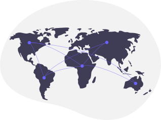

EMILY SEITZ
INSIGHTS ON GLOBAL FINANCIAL INCLUSION FROM 2021 WORLD BANK SURVEY DATA
139 countries represented through 145,000 survey respondees on questions related to attributes such as education, sex, urbanity, employment, and access to financial products and how it correlates to income mobility.
OBJECTIVE: PERFORM EXPLORATORY AND STATISTICAL ANALYSIS ON WORLD BANK SURVEY DATA TO PROVIDE INSIGHTS ON WHAT FACTORS lead to higher income mobility such as education and geographic location, as well as how sex and age contributes or act as barriers to economic mobility and participation in using modern financial products. Also will look at financial worries and attributes of participants who have the greatest financial concerns and barriers.
ANALYSIS COMPONENTS
TOOLS
- JUPYTER NOTEBOOKS REPOSITORY LINK
- PYTHON LIBRAIRIES PANDAS, NUMPY, SEABORN, MATPLOTLIB, STATMODELS.
- EXCEL PRESENTATION LINK
- TABLEAU PRESENTATION LINK
DATASET
SKILLSETS
- DATA WRANGLING & SUBSETTING
- DATA CLEANSING
- SUPERVISED MACHINE LEARNING: REGRESSION
- UNSUPERVISED MACHINE LEARNING; CLUSTERING
- SOURCING & ANALYZING TIME SERIES DATA
- DATA VISUALIZATION
PROJECT LIMITATIONS
THE BELOW ILLUSTRATES CHALLENGES IN DATA VALIDATION.| DATA LIMITATIONS |
|---|
| DATA WEIGHTING IS USED TO ENSURE A NATIONALLY REPRESENTATIVE SAMPLE FOR EACH ECONOMY. |
| FINAL WEIGHTS CONSIST OF THE BASE SAMPLING WEIGHT, WHICH CORRECTS FOR UNEQUAL PROBABILITY OF SELECTION BASED ON HOUSEHOLD SIZE, AND THE POSTSTRATIFICATION WEIGHT, WHICH CORRECTS FOR SAMPLING AND NONRESPONSE ERROR. |
| POST-STRATIFICATION WEIGHTS USE ECONOMY-LEVEL POPULATION STATISTICS ON GENDER AND AGE AND, WHERE RELIABLE DATA ARE AVAILABLE, EDUCATION OR SOCIOECONOMIC STATUS. |
| THE ACCURACY OF THE DATA DEPENDS ON PARTICIPATION AND GETTING A SELECTION OF RESPONDERS THAT PROPORTIONATELY REPRESENTS THE ENTIRE POPULATION ACCURATELY. AS WELL AS GETTING CONSENT FROM PARTICIPANTS AND TRUTHFUL. |
DATA INSIGHTS
DO KEY SOCIOECONOMIC ATTRIBUTES SUCH AS EDUCATION CORRELATE TO HIGHER INCOME MOBILITY?
WHAT IS THE AGE AND EDUCATIONAL MAKE UP OF SURVEY RESPONDEES?
HOW ARE FINANCIAL WORRIES CORRELATED TO KEY SOCIO-DEMOGRAPHIC ATTRIBUTES?
 Worries about educational costs are highest amongst lower educated respondees.
Worries about educational costs are highest amongst lower educated respondees.HOW HAD GLOBAL GDP $ CHANGED OVER PAST DECADES?
CONCLUSION AND NEXT STEPS
The data findings are inconclusive in illustrating a strong correlation between income mobility and education, neither with age, sex, or urban/rural locality to higher income levels. .
CONCLUSION: The data is so large and is intended to reflect 97% of the world's population which makes it hard to find strong relationships within such a large pool. The accuracy of the data depends on participation and getting a selection of responders that proportionately represents the entire population accurately, as well as getting consent from participants and truthful responses.
| ISOLATE SMALLER POOLS WITHIN COUNTRIES RATHER THAN ALL COUNTRIES TO BE ABLE TO FIND MORE SIGNIFICANT TRENDS IN LOWER LEVELS OF DATA. |
| COMPARE SURVEY DATA FROM 2011, 2014 AND 2017 TO TRACK PROGRESS AND SETBACKS BY COUNTRY/REGION TO FURTHER INVESTIGATE DRIVING FACTORS TO IMPROVED ECONOMIES AND INCLUSION STATUS . |
| MERGE WORLD INDICATOR DATA OF GDP$ AND OTHER METRICS TO FINANCIAL INCLUSION DATA TO LOOK AT TRENDS BY COUNTRY AND REGION LEVEL OVER TIME. |
| COMPARE DATA BEFORE 2020 AND POST PANDEMIC TO IDENTIFY MOST RESILIENT COUNTRIES AND THOSE COUNTRIES WHO SUFFERED MOST IN FINANCIAL INCLUSION PROGRESS FROM THE PANDEMIC. |